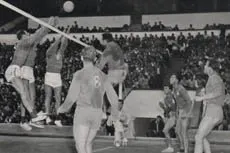
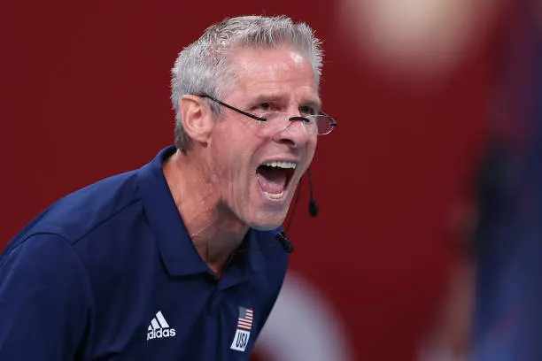
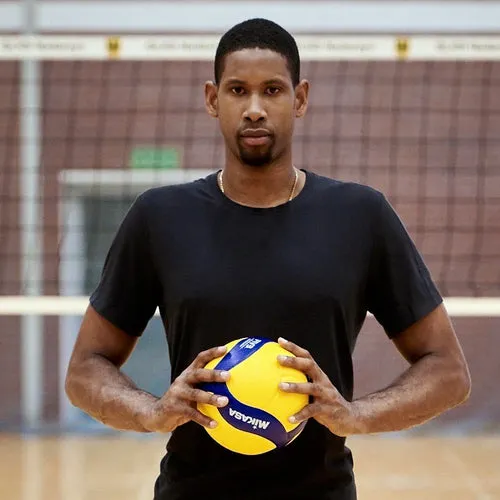
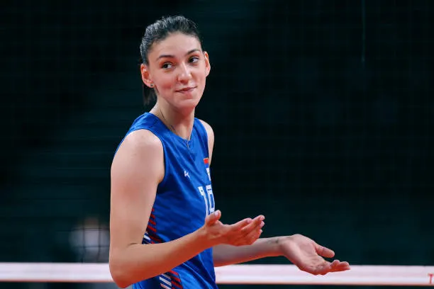
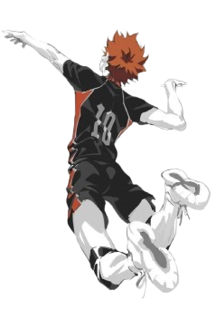

History of Volleyball
Volleyball was invented in 1895 by William G. Morgan, a physical director at the Young Men's Christian Association (YMCA) in Massachusetts. He wanted to create a new game that combined elements of basketball, baseball, tennis, and handball. The original name for the game was "Mintonette," but it was later changed to "Volleyball" after a demonstration game where a player remarked that the ball was volleying back and forth over the net.
The rules to play the game kept changing over the years like the number of players and the amount of points to win a set but it was finally standardized in 1947.
in 1947, representatives from 14 nations Belgium, Brazil, Czechoslovakia, Egypt, France, the Netherlands, Hungary, Italy, Poland, Portugal, Romania, Uruguay, the USA and Yugoslavia met in Paris to form the Federation Internationale de Volleyball (FIVB). "FIVB has become one of the largets sporting organizations in the world with 222 afiliated bodies" Olympics
With an international governing body in place, volleyball's popularity grew rapidly. In 1957, indoor volleyball was granted Olympic status by the International Olympic Committee (IOC)

Famous Players & Tournaments
Volleyball has seen many legendary players and memorable tournaments
throughout its history; some that has changed the game forever.
Here are some of the most notable players and tournaments in volleyball
history
1. Karch Kiraly

Widely regarded as one of the greatest volleyball players of all time, Karch Kiarly is an American former professional volleyball player and coach. He dominated indoor volleyball in the 1980s and lead the US Men's National Team to back-to-back Olympic Gold medals in 1984 and 1988. He later transitioned to becah volleyball and won a gold medal. he is the only athlete to win Olympic gold in both indoor and beach volleyball. After retiring from playing, Kiraly went on to coach the US Women's Indoor team to their first Olympic gold in 2021.
Click here to learn more about Karch Kiraly
2. Wilfredo León

Wilfredo León is a former Cuban professional volleyball player that plays for Poland. He started playing volleyball before reaching his teens and got debuted for the Cuban national team at the age of 14. His position is outside hitter. Wilfredo is famous for his powerful jump serves that average 130km/h and an impressive hitting point that allows him to spike over almost any block in the world.
Click here to learn more about Wilfredo León
3. Tijana Bošković

Tijana Bošković is a Serbian professional volleyball player who plays as a middle blocker. She is widely considered one of the best female players in the world and has won numerous awards, including the Best Player award at the 2016 Olympics. Bošković is known for her powerful spikes and excellent blocking abilities.
Click here to learn more about Tijana Bošković
4. The 2012 London Olympics
This single match is widely regarded as one of the greatest
volleyball matches in history. It was the gold medal match between
Russia vs Brazil. Brazil was completely dominating the match. They
won the first two sets easily and were leading in the third set.
Russia was completely overwhelmed, and their offense was falling
apart against Brazil's defense. Desperate, Russia's coach made the
the bold desicion to sub his giant 7'2 middle blocker Dmitry
Muserskiy and move him out of his normal position to play as an
oppisite hitter.
Middle blockers almost never play as a primary attacker so Brazil
had no idea on how to defend against him. Muserskiy went on to score
31 points and Russia flipped the match around, winning the next 3
sets and stole the gold medal.
 Click here to learn more about the 2012 London Olympics
Click here to learn more about the 2012 London Olympics
Beach Volleyball
Beach volleyball is a popular variant of indoor volleyball.Born on the
sunny shores of Santa Monica, California, in the 1920s, the beach game
strips the sport down to its absolute essentials: just two players per
side covering a sand court that is only slightly smaller than an
indoor one.
The volleyball is differernt from the indoor one as it is slightly
larger and lighter to make it easier to control in the wind. The rules
are also slightly different, with matches being played as
best-of-three sets, and the first two sets played to 21 points instead
of 25. The final set is played to 15 points.



Haikyuu!!: The Anime That Connects
How It Inspires People to Play Volleyball
Shoyo, a 15-year old passionate volleyball player wants to become like the Little Giant. The problem is, hes short, not very skilled and isn't the smartest, but what he does have keeps him going. He has his amazing jumps and his determination. He continues to grow throughout the anime and proves to viewers that you need to push past the walls in your way.
Character Development
From Hinata's relentless determination to Kageyama's growth from a lone genius to a true teammate, every character in Haikyuu!! evolves through failure, rivalry, and perseverance mirroring the real journey of any athlete while carrying the viewer along the ride.
"The last ones standing are the winners. No matter how many times you get knocked down, keep getting back up."— Ittetsu Takeda, Haikyuu!!